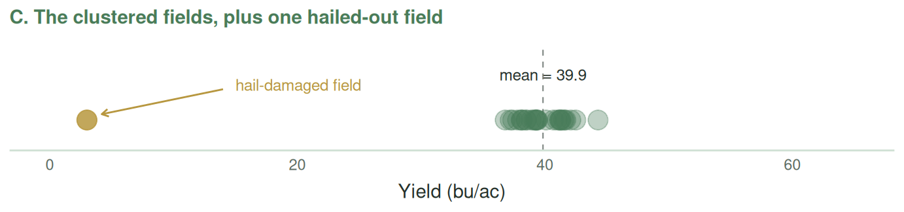
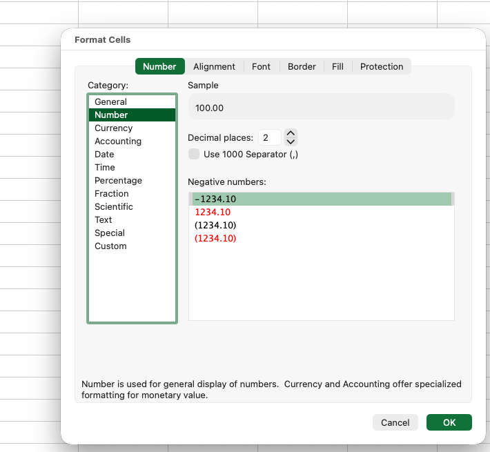
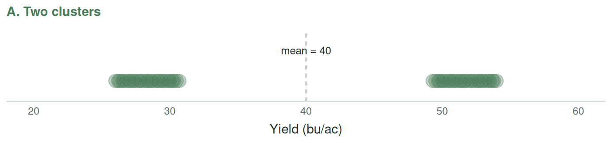
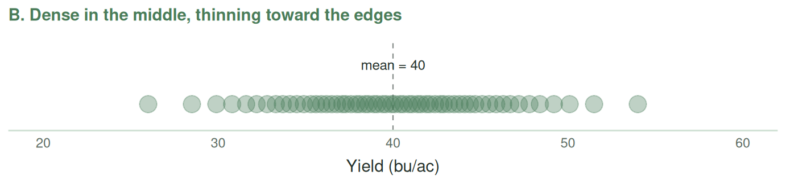

1 Describing Data in Excel
Learning Objectives
By the end of this module, you will be able to:
Excel skills
- Navigate and organize Excel workbooks
- Use formulas, cell references, and functions like
SUM - Compute descriptive statistics with Excel’s built-in functions
- Use conditional and lookup functions (
IF,COUNTIF,VLOOKUP,XLOOKUP) - Distinguish wide from long data, and reshape it
- Build PivotTables and PivotCharts, and create clear, effective charts
- Write reproducible workbooks others can follow
Statistical concepts
- Describe the centre of data.
- Calculate and interpret the mean, median, and mode — and choose the right one
- Read the mean–median gap as a clue to outliers and the shape of a distribution
- Compute a weighted average, and see why it can differ from a simple one
- Describe the position of observations within the data.
- Compute percentiles and quartiles
- Describe the spread of the data.
- Compute range, variance, standard deviation, and coefficient of variation
- Describe the shape of the data.
- Construct and interpret histograms and box plots
1.1 Excel Basics
The first half of this module is about the tool. We start with what a spreadsheet actually is, then work through cells, formulas, and references — the mechanics that everything else depends on. From there we move to the functions that make Excel useful for real data: conditional calculations, lookups across tables, sorting and filtering, reshaping, and PivotTables. Work through these in order; each builds on the last.
1.1.1 Excel: A Quick Introduction
Most of you have used Excel before — the grid of cells where you type numbers and add things up. That is not wrong, but it is a thin way to think about it.
Excel is a spreadsheet program. The core idea is that every cell holds either a value (a number or text) or a formula that computes a value from other cells — and when an input changes, every formula that depends on it updates automatically.
TipOther resources — getting started with Excel
- Excel for Dummies — Microsoft 365 Excel for Dummies, the opening chapters on the Excel interface and workbook basics.
- Microsoft Support — Excel for Windows training, Microsoft’s own free tutorial hub.
- Video (beginner overview) — How to use Excel for beginners — a short tour of entering data, formatting, and the interface.
File Formats and File Management
In this class, we will read in data in two formats:
.xlsx— The default modern Excel format. Holds multiple worksheets, formulas, formatting, charts, and PivotTables. Save your working files as this. Note that.xlsis a pre-2007 format..csv— Comma-separated values: plain text, one table, one row per line, values separated by commas. This is generally preferred for raw data because it can be read by most statistical software (notably R). Whereas R has difficulty reading Excel files.
Excel will readily open a .csv file. However, it sometimes tries to be too helpful and will convert data to a format that it thinks is appropriate (e.g., turning SEPT1 into the date 1-Sep, or stripping leading zeros off a farm ID). When this might happen, use Data → Get Data → From Text/CSV, which lets you set column types explicitly, instead of double-clicking the file.
Workbook Structure: Thinking in Sheets
A workbook is one Excel file; it holds one or more worksheets (“sheets” or “tabs”). A habit worth building early is deciding deliberately how to split work across sheets — and that starts with one question you should ask every time: who is the audience for this workbook? Three answers, each shaping how you build it:
- Just you. A scratchpad — quick numbers for today’s decision, or exploratory work. You can get away with fewer sheets, terser labels, less formatting. But be honest: “just for me” files have a habit of becoming “I need to send this to my boss tomorrow” files, so if there is any chance it will be shared, build it as if it will be.
- Internal colleagues. A file for a co-worker, your boss, or the TA. Now you want a README, clear labels, consistent structure, and enough formatting to navigate without asking you questions. Aim for “clean and self-explanatory,” not “pretty.”
- External audiences. A file for clients, regulators, or the public. Here aesthetics genuinely matter — consistent formatting, polished tables, charts that stand on their own, often with the working sheets hidden. Every element reflects on you or your organization.
There is no single “right” level of polish — it depends on who opens the file. The mistake is not picking the wrong level; it is not thinking about it at all. Match the polish to the audience.
A complex workbook should open with a README or contents sheet. This explains what the workbook is, who made it and when, where the inputs came from, and what each of the other sheets contains. It can also hold links to those sheets, so a reader can jump straight to what they need.
If you are doing a lot of data cleaning, it is also good practice to store raw data in a separate sheet from the cleaned data. This way you can always come back to the raw data and see what is the result of your work versus the raw data.
Finally, it is best to do analysis and charts in separate sheets, rather than having one sheet with 32 charts and 16 summary statistics. Of course, you don’t need to have a separate worksheet where you calculate the mean, and another where you calculate the median, and another where you calculate the standard deviation. But generally, you don’t want too much analysis on the same sheet. So for example, you might have one sheet for summary statistics and another for hypothesis tests.
The principle is separation of concerns: raw data, cleaning, analysis, and presentation each have their own place.
Aesthetics
In addition to calculations, Excel allows you to shade cells, put borders around tables, add text that describes the data, and insert images. These can all create a much nicer aesthetic than a wall of numbers. However, they can also make subsequent analysis of the data frustrating. So how many of these flourishes you add depends on your audience.
One audience might simply want to view the data – in which case you should format it so that they can see the dataset as easily as possible – use borders around tables, use bold text for totals, etc. An example of this is the data showing the capacity of grain elevators in Manitoba. The aesthetic is pretty minimal, but the bolding and borders allow the user to quickly understand the dataset.
TipManitoba primary elevator capacity
Download this workbook · Open online (File → Save a Copy to view formulas and edit)
Source: Manitoba Agriculture, Foresight and Analysis — Markets and Statistics.
Another audience might want to do specific calculations with the data. An example of this is the Saskatchewan Crop Planning Guide, which allows users to input their own costs, expected yields, and crop prices to calculate the profitability of different crops. It is a fairly complex workbook, with a sheet for every major crop in the province. However, it is pretty user-friendly and easy to navigate: it opens with a disclaimer, lists its assumptions on their own sheet, and uses an identical layout on every crop sheet, so once you can read one you can read them all.
TipSaskatchewan Crop Planning Guide
Download this workbook · Open online (File → Save a Copy to view formulas and edit)
Source: Saskatchewan Ministry of Agriculture — Crop Planning Guide and Crop Planner (2026 edition).
Yet another audience might want to do more detailed analysis of the data, and would prefer it in a more raw form. An example is the yield data from the Saskatchewan government (which we will work with more throughout this book), which gives yields of major crops in each of Saskatchewan’s rural municipalities. This data has no adornments — one header row, one row per observation, starting in cell A1 — which is exactly what an audience that wants to run its own analysis needs.
TipSaskatchewan RM yields, 2024–2025
Download this workbook · Open online (File → Save a Copy to view formulas and edit)
Source: Government of Saskatchewan — Saskatchewan’s Dashboard: RM Yields. Extract filtered to 2024–2025.
1.1.2 Cells, References, and Formulas
Cells and Formulas
Each cell in a worksheet has an address formed by its column letter and row number: A1, B2, AA35, and so on. A cell can contain:
- A number:
42,3.14,-1000 - Text:
Canola,Field 7,North field - A date (internally stored as a number):
2026-09-15 - A formula: anything starting with
=
A formula is a small calculation. It can be as simple as =2+2 or as complex as =IF(AND(B2>0,C2<100),VLOOKUP(D2,$F$1:$G$50,2,FALSE),"N/A"). Perhaps the most powerful aspect of Excel is that a formula does not just combine numbers you type in directly (like =2+2) — it can operate on the numbers held in other cells. For example, =A2+B2 adds together the contents of cells A2 and B2. And because the formula references those cells rather than fixed numbers, it re-computes automatically whenever they change: edit A2, and every formula that mentions A2 updates on its own. This is what makes a spreadsheet a living model rather than a static page of numbers.
Excel uses the standard mathematical operators — +, -, * (multiply), / (divide), and ^ (exponent) — and it evaluates them in the standard PEMDAS order: Parentheses, Exponents, Multiplication/Division, then Addition/Subtraction, working left to right within each level.
The worksheet below provides examples of simple operations.
Download this workbook · Open online (File → Save a Copy to view formulas and edit)
Relative and Absolute References
This is the concept that trips up more beginners than any other. Pay attention.
When you write a formula like =A1+B1 in cell C1 and then copy that formula down to C2, Excel automatically changes it to =A2+B2. This is called a relative reference — the cell addresses are interpreted relative to where the formula is. Usually this is what you want. If you have a column of sales in column A and a column of costs in column B, and you want profit in column C, you want each row to compute its own sales minus its own costs.
But sometimes you don’t want the reference to change. Suppose you have a fixed exchange rate in cell E1 (say, 1.35 CAD per USD) and you want to convert a column of USD prices in A2:A100 to CAD. If you write =A2*E1 in cell B2 and copy it down, A2 correctly becomes A3, A4, etc. — but E1 also becomes E2, E3, E4, which are empty cells. Your conversion breaks.
The fix is to use an absolute reference by putting a dollar sign in front of the column letter, row number, or both:
A1— relative column, relative row (changes when copied in either direction)$A1— absolute column, relative row (column stays as A, row changes)A$1— relative column, absolute row (column changes, row stays as 1)$A$1— absolute column and row (neither changes; “locked”)
So in the exchange-rate example, you should write =A2*$E$1. Now when you copy the formula down, A2 becomes A3, A4, … but $E$1 stays as $E$1. Exactly what you want.
There is a keyboard shortcut: after typing or selecting a cell reference, press F4 (Windows) or ⌘T (Mac) and Excel cycles through the four variations. Get in the habit of using it.
A practical rule of thumb: any number that appears in your analysis but is not part of the data itself should live in a labelled cell that you reference, not in the formula. If your analysis assumes a 5% discount rate, don’t write =A1*1.05 in a hundred places. Put 0.05 in a cell called discount_rate, label it clearly, and reference it. When the assumption changes (and it will), you change one number instead of a hundred.
Three short workbooks below build this up one step at a time.
1 · A relative reference. Nothing is locked, so when the formula is copied down, every reference moves with it — each row uses its own bushels and its own price.
2 · An absolute reference. Now the conversion factor sits in a single cell. Every row needs that same cell, so it is locked with dollar signs — $B$4 — while the bushels reference is left free to move.
3 · Several crops at once. Each crop has its own factor, side by side in row 4. One formula fills all three columns: =$B7*C$4 locks the row (so it always looks up to the factors) but leaves the column free (so each column picks up its own crop). Locking one half and not the other is what the mixed forms B$4 and $B4 are for.
The workbook below holds the data we will use for the rest of this module: every barley variety grown in Saskatchewan in 2025, with the total acres seeded to each and its average yield. It is a good sheet to practice references on — try computing total production for a variety (acres × yield), then dragging that formula down the column.
Download this workbook · Open online (File → Save a Copy to view formulas and edit)
Source: aggregated from Saskatchewan Crop Insurance Corporation variety data, 2025.
Cell Formatting
In the formulas above we were working only with numbers. However, cells can also store text, dates, times, or currencies. Each cell has a number format, and it is important that the number format of the cell match the data it is storing. Examples of number formats are General, Number, Date, and Currency. Excel will usually default to formatting a cell as General, but may autodetect when you enter information as, for example, a date and immediately change the format to date. You can alter the format of a cell by right-clicking on it and choosing Format Cells… (Figure 1.1 (a)), which opens a dialog where you pick a category and set its options.

100, but the Number category with two decimal places displays it as 100.00
Two formatting issues that are of immediate relevance are rounding and dates. It is best practice to round to the nearest whole number or the nearest meaningful digit – most audiences won’t care if you report average yields as 40.52 bushels per acre or 40.519834760. It is particularly important to ensure that dates are formatted properly, because you can perform operations on dates. For example, if you specify a day as September 7, 2027 and then you add seven to that date, you will get September 14, 2027. If that date is stored as text rather than as a date, the same calculation returns an error instead.
Importantly, formatting changes only how a value looks, not the value Excel stores and computes. A cell holding 0.45 can display 45%; a cell holding 1000 can display $1,000.00; but a formula referencing either still uses the plain underlying number.
Download this workbook · Open online (File → Save a Copy to view formulas and edit)
The SUM Function
So far every formula has referenced cells one at a time — =A2*B2, =A1+B1. That is fine for a handful of cells, but imagine adding up a column of 500 field sizes: =A2+A3+A4+ ... for 500 rows is unthinkable. This is where functions come in. A function is a built-in operation with a name, and the first one worth knowing is SUM.
SUM adds up a group of cells. Instead of listing each cell, you give it a range — a block of cells written as two corners separated by a colon:
A2:A10— the ten cells fromA2down toA10(a column).A2:D2— the four cells fromA2across toD2(a row).A2:D10— the rectangular block with those corners (a grid).
So to add up all the acres in a column that runs from B2 to B10, you write:
=SUM(B2:B10)That single formula does the work of nine + signs, and it keeps working if you insert more rows inside the range. You can also sum several pieces at once by separating them with commas — cells, ranges, or plain numbers mixed freely:
=SUM(B2:B10, D2:D10) the acres plus a second block
=SUM(B2:B10, 500) the column, plus one extra 500A worked example. Suppose column B holds the acres seeded to nine barley varieties in B2:B10, and column C holds each variety’s yield in bushels per acre. Two quick questions:
- Total acres of barley?
=SUM(B2:B10). - Total production, in bushels? You want each variety’s acres × yield, then all of those added up. The long way is a helper column: put
=B2*C2inD2, copy it down toD10, then=SUM(D2:D10). (There is a one-formula shortcut,SUMPRODUCT, but the helper-column version is clearer while you are learning — and it lets you see each variety’s contribution.)
SUM is the gateway to a whole family of range functions you will meet in the next sections: AVERAGE, MEDIAN, MIN, MAX, COUNT, and later the conditional versions like SUMIF. They all share the same idea — hand the function a range, get one number back. Once you are comfortable with the range idea here, the rest come easily.
TipWatch the range, not just the formula
The commonest SUM mistake is a range that is too small or too big — you added rows to your data but your =SUM(B2:B10) still stops at row 10, or it accidentally includes a total cell and double-counts. After writing a SUM, glance at the range Excel highlights (it colours the cells as you edit the formula) and confirm it covers exactly the numbers you meant.
TipOther resources — cells, references, and formulas
- OpenStax, Introductory Statistics 2e — Chapter 2 introduction (orientation to descriptive statistics, which these formulas support).
- Excel for Dummies — Microsoft 365 Excel for Dummies, the chapters on entering formulas and on cell references.
- Microsoft Support — Overview of formulas in Excel and Switch between relative, absolute, and mixed references.
- Video (relative vs absolute references) — Excel Relative and Absolute Cell References — what happens to references when you copy a formula, and the
$signs. - Video (order of operations) — Order of operations for math formulas in Excel.
1.1.3 Conditional Functions
So far we have summarized entire columns. Often you want to summarize only a subset: “what is the average yield on irrigated fields?” “how many farms in the dataset are over 1,000 acres?” This is what Excel’s conditional functions are for.
The IF Function
IF(condition, value_if_true, value_if_false) returns one thing if a condition is true and another if it’s false.
Example: =IF(B2>50, "Above average", "Below average") — labels each row based on whether its value in B2 exceeds 50.
You can nest IFs inside each other to handle more than two cases:
=IF(B2<40, "Low", IF(B2<60, "Medium", "High"))
This labels values under 40 as “Low”, values from 40 up to (but not including) 60 as “Medium”, and 60 or above as “High”. Nested IFs get ugly quickly; once you are more than two levels deep, consider using IFS (see below) or a VLOOKUP/XLOOKUP against a table of breakpoints.
IFS(condition1, value1, condition2, value2, ...) is a cleaner way to write nested conditions:
=IFS(B2<40, "Low", B2<60, "Medium", TRUE, "High")
(The TRUE at the end is an “else” catch-all.)
COUNTIF, SUMIF, and AVERAGEIF
These functions summarize a range conditionally.
=COUNTIF(range, criterion)— how many cells in the range match the criterion?=SUMIF(range, criterion, [sum_range])— sum of cells matching the criterion.=AVERAGEIF(range, criterion, [average_range])— average of cells matching the criterion.
Example: =COUNTIF(C2:C100, ">1000") counts the number of rows where column C is greater than 1000.
Example: =SUMIF(A2:A100, "Canola", B2:B100) sums the values in B2:B100 for rows where A2:A100 equals “Canola”.
The “S” versions — COUNTIFS, SUMIFS, AVERAGEIFS — let you specify multiple conditions:
=SUMIFS(B2:B100, A2:A100, "Canola", C2:C100, ">1000")
This sums column B for rows where column A is “Canola” and column C is greater than 1000. Note that the sum range comes first in the IFS versions and last in the non-IFS version — an inconsistency for historical reasons that you simply have to memorize.
Building a criterion from a formula. Sometimes the number you want to compare against is itself computed — for example, “how many yields are above the average yield?” You cannot write =COUNTIF(E2:E100, ">AVERAGE(E2:E100)"), because everything inside the quotes is treated as literal text (Excel would look for cells literally equal to the text “> AVERAGE(…)”). Instead, build the criterion by joining the ">" symbol to the computed number with the & operator:
=COUNTIF(E2:E100, ">"&AVERAGE(E2:E100))Here ">"&AVERAGE(E2:E100) first computes the average, then glues ">" in front of it to make a criterion like ">28.3". The same trick works for SUMIF/AVERAGEIF and for any criterion whose threshold you need to compute rather than type.
Counting, and blank cells. Two closely related counting functions are easy to confuse:
=COUNT(range)counts only cells that contain numbers. It skips blanks and text.=COUNTA(range)counts any non-empty cell (numbers or text).
For “how many fields reported a yield?” you want COUNT, which naturally skips blank cells. This matters because real agricultural data is full of blanks (a crop not grown, a value not reported). A blank is not zero: AVERAGE, COUNT, MEDIAN, and STDEV.S all silently skip blank cells, which is usually what you want. But if you “helpfully” fill blanks with 0 first, those functions will treat the zeros as real measurements — dragging the average down and corrupting your analysis. Leave blanks blank.
These conditional functions are workhorses for any moderately complex analysis. Get comfortable with them.
TipOther resources — conditional functions (IF, COUNTIF, SUMIF, …)
- Excel for Dummies — Microsoft 365 Excel for Dummies, the chapters on logical functions (
IF) and on conditional counting/summing. - Microsoft Support — IF function, COUNTIF, SUMIF, AVERAGEIF.
- Video (IF function) — IF function in Excel tutorial.
- Video (COUNTIF / SUMIF / AVERAGEIF) — How to use SUMIF, COUNTIF, and AVERAGEIF in Excel.
- Video (broader formulas course) — Kevin Stratvert, Excel formulas and functions — full course (includes an IF-function section).
1.1.4 Lookup Functions
One of the most common real-world tasks is combining information from two tables. You have a table of yields by field, and a separate table listing the variety planted in each field. You want to add the variety to your yield table. This is a lookup.
VLOOKUP
VLOOKUP(lookup_value, table_array, column_index, [range_lookup])
Searches for lookup_value in the first column of table_array, and returns the value in the column_index-th column of the matching row.
Example: if F2:G50 contains a list of field IDs in column F and varieties in column G, then =VLOOKUP(A2, $F$2:$G$50, 2, FALSE) looks up the field ID in cell A2 and returns the matching variety.
The fourth argument, range_lookup, is critical:
FALSE(or0): exact match only. Use this almost always.TRUE(or1, or omitted): approximate match. Only use this when you are looking up a number against a sorted table of breakpoints (e.g., income → tax bracket). If your lookup table is not sorted or you are looking up text,TRUEwill silently give you wrong answers.
I cannot emphasize enough: always explicitly pass FALSE unless you are absolutely sure you want approximate matching. The default of TRUE has burned countless people.
VLOOKUP has two big limitations: it can only look up in the first column (it cannot look “backwards”), and if you insert a column in your lookup table, the column index silently breaks. Microsoft introduced XLOOKUP to fix both.
XLOOKUP
XLOOKUP(lookup_value, lookup_array, return_array, [if_not_found], [match_mode], [search_mode])
Conceptually simpler: you specify the array to search in, and the array to return from. They can be anywhere. If not found, you can specify what to return (instead of the ugly #N/A you get from VLOOKUP).
Example: =XLOOKUP(A2, $F$2:$F$50, $G$2:$G$50, "Unknown") — looks up A2 in column F, returns the matching value from column G, returns "Unknown" if not found.
A nice bonus: XLOOKUP defaults to an exact match, so it avoids the silent-wrong-answer trap that VLOOKUP’s TRUE default creates. One less thing to remember.
XLOOKUP is the right default choice in modern Excel. Use it instead of VLOOKUP unless you are working in a file that might be opened in an older version of Excel.
INDEX/MATCH
Before XLOOKUP, the standard workaround for VLOOKUP’s limitations was to combine INDEX and MATCH.
MATCH(lookup_value, lookup_array, [match_type])returns the position of a value in an array.INDEX(array, row_num, [column_num])returns the value at a given position.
Combining them: =INDEX($G$2:$G$50, MATCH(A2, $F$2:$F$50, 0)) does the same thing as the XLOOKUP above. You still see this pattern a lot in older workbooks.
Looking Up on Two Keys at Once
Often a single column does not uniquely identify the row you want. Suppose each row of your data is one Rural Municipality (RM) in one year, so RM 1 appears many times — once per year. Looking up “RM 1” alone returns only the first matching row (some arbitrary year), not the year you meant. You need to match on RM and Year together.
The simplest way is to build a combined key on the fly by joining the two lookup values with a separator, and searching a matching joined column:
=XLOOKUP(1 & "|" & 2023, B2:B10650 & "|" & A2:A10650, E2:E10650)Here B2:B10650 & "|" & A2:A10650 builds a temporary column of keys like 1|2023, and the lookup value 1 & "|" & 2023 builds the matching key 1|2023. The "|" separator matters: without it, the pair (1, 12) and the pair (11, 2) would both collapse to 112 and could match by accident; the "|" keeps 1|12 and 11|2 distinct.
The same idea works with INDEX/MATCH:
=INDEX(E2:E10650, MATCH(1 & "|" & 2023, B2:B10650 & "|" & A2:A10650, 0))In older versions of Excel these are entered as array formulas (Ctrl+Shift+Enter); modern Excel handles them directly. Two-key lookups like this come up constantly with agricultural data, where a value is identified by place and time together.
TipOther resources — lookup functions (VLOOKUP, XLOOKUP, INDEX/MATCH)
- Excel for Dummies — Microsoft 365 Excel for Dummies, the chapter on lookup and reference functions.
- Microsoft Support — VLOOKUP, XLOOKUP, INDEX, MATCH.
- Video (XLOOKUP) — Leila Gharani, How an Excel pro uses XLOOKUP (XLOOKUP vs VLOOKUP and INDEX/MATCH).
- Video (VLOOKUP for beginners) — Kevin Stratvert, VLOOKUP in Excel — step-by-step tutorial.
- Video (INDEX/MATCH) — Leila Gharani, The definitive guide to INDEX and MATCH.
1.1.5 Sorting and Filtering
Two basic data manipulation tasks that you should be able to do without thinking:
Sort rearranges the rows by the values in one or more columns. Select the data (or click a cell inside it), then Data → Sort. You can sort by multiple columns in sequence (sort by region, then by yield within region). Critical: make sure you include all the relevant columns when you sort! A common rookie mistake is to select just the column you want to sort by, which reorders that column but leaves the others in place — silently corrupting the correspondence between rows.
Filter hides rows that don’t match a condition. Click inside the data and choose Data → Filter. Each column gets a dropdown arrow that lets you pick which values to show. Filtering does not delete rows; it just hides them. Clearing the filter brings them back.
Filtering is enormously useful for exploring a dataset: “let me just look at the canola fields,” “just the 2023 data,” “just the fields with yields below 30.” Learn the keyboard shortcut (Ctrl+Shift+L on Windows, ⌘⇧F on Mac, toggles filters on and off).
WarningFilters hide rows from you, not from your formulas
This trips up almost everyone. If you filter a column to show only 2023 and then write =AVERAGE(E2:E10650), Excel still averages every row — including the hidden ones. Ordinary functions (AVERAGE, SUM, MEDIAN, STDEV.S, QUARTILE.INC, …) ignore the filter completely. You would get the 1990–2025 average, not the 2023 average, and never notice.
To compute a statistic on a subset, do one of these:
- Copy the visible rows to a new sheet, then compute there (the recommended workflow for this course). After filtering, select the visible data, copy, and paste into a fresh sheet — only the visible rows come along — then run your formulas on that clean subset.
- Or use a conditional function that does the filtering itself:
AVERAGEIF,SUMIF,COUNTIF(covered above), which never rely on hidden rows. - Or use
SUBTOTAL/AGGREGATE, which are the two functions that do respect filters (optional, more advanced).
Whenever a task says “for the 2023 data, compute …,” your first move should be to isolate that subset — do not just filter and point a formula at the whole column.
TipOther resources — sorting and filtering
- Excel for Dummies — Microsoft 365 Excel for Dummies, the chapter on sorting and filtering data.
- Microsoft Support — Sort data in a range or table and Filter data in a range or table.
- Video (right-click method) — Excel sort and filter: skip the ribbon, use right-click.
- Video (basics) — The Organic Chemistry Tutor, Excel sorting and filtering data.
1.1.6 Wide vs. Long Data
Before we get to PivotTables, we need to talk about the shape of a dataset — because the same data can be laid out in two very different ways, and which one you have determines what you can easily do with it.
Consider our Saskatchewan crop-yield data. Each row records the average yields for one Rural Municipality (RM — a local administrative area, the way Saskatchewan divides up its farmland) in one year. Here it is in wide format — one row per RM-year, and each crop gets its own column:
| Year | RM | Spring Wheat | Canola | Barley | Oats |
|---|---|---|---|---|---|
| 2023 | 1 | 50.8 | 36.8 | 53.0 | 55.1 |
| 2023 | 2 | 48.5 | 34.4 | 50.5 | 81.8 |
And here is the same information in long format — one row per RM-year-crop, with the crop name pulled out into its own column and all the yields stacked into a single Yield column:
| Year | RM | Crop | Yield | Unit |
|---|---|---|---|---|
| 2023 | 1 | Spring Wheat | 50.8 | bu/ac |
| 2023 | 1 | Canola | 36.8 | bu/ac |
| 2023 | 1 | Barley | 53.0 | bu/ac |
| 2023 | 1 | Oats | 55.1 | bu/ac |
| 2023 | 2 | Spring Wheat | 48.5 | bu/ac |
| … | … | … | … | … |
Both hold exactly the same numbers. The difference is purely structural: in wide format, “which crop” is encoded in the column position; in long format, “which crop” is a value in a column.
Which one should I use?
Each shape is convenient for different things:
- Wide is convenient for column-at-a-time math. If you want the average canola yield, it is right there:
=AVERAGEthe Canola column. Wide format is easy to read by eye and quick for the descriptive statistics and conditional functions we covered above. - Long is what you need to summarize by the stacked variable. Suppose you want a table of average yield for each crop. In long format that is a one-move PivotTable: put
Cropon Rows andYieldin Values. In wide format you cannot do this in a single pivot — the crops are separate columns (four in the small example above, eight in the full dataset), so “crop” isn’t a field you can drag anywhere.
That is the key idea: a PivotTable can only group by a field that lives in its own column. If the thing you want on your rows (here, the crop) is spread across many columns, you must reshape to long first.
Is wide “wrong”?
No. The wide layout above is a perfectly reasonable way to store this data — you could argue each crop genuinely is its own variable. Neither format is universally “correct”; they are tools for different jobs. What matters is recognizing which shape you have and reshaping when the task calls for it.
Reshaping between wide and long by hand in Excel is tedious and error-prone. In R, it is a single function call in each direction (pivot_longer() and pivot_wider()), which is one of the reasons we move to R later in the course. You will meet the formal idea of “tidy data” — and these reshaping tools — in Chapter 3.
For now, the practical takeaway: for the practice questions, use the wide file for descriptive statistics and lookups, and the long file when you need a PivotTable that groups by crop. We provide both.
TipOther resources — wide vs. long data
- R for Data Science (Wickham) — the Data tidying chapter is the definitive treatment of tidy data and the wide/long distinction (we return to this in Module 3).
- Video (concept + reshaping) — Riffomonas Project, Reshaping data to be long or wide with pivot_longer and pivot_wider. Uses R, but the idea of wide vs. long is exactly what we need here.
1.1.7 PivotTables
If there is one feature in Excel that has saved more analyst-hours than any other, it is the PivotTable. Every AREC 261 student will use PivotTables in their career. Learn them now.
The Concept
A PivotTable lets you take a long, messy table of data and summarize it by one or more categories — without writing any formulas. The name comes from the fact that you can “pivot” the summary: put regions on the rows and years on the columns, then swap them, then add varieties as a third dimension, all with drag-and-drop.
Building One
Starting data: a long table where each row is one observation (e.g., one field’s yield in one year), and the columns are attributes (year, region, variety, yield, acres).
- Click any cell inside the data.
- Insert → PivotTable. Excel proposes a range (usually correct) and asks where to put the result. Put it in a new worksheet.
- You now see the empty PivotTable and a “PivotTable Fields” panel on the right. Drag fields into four areas:
- Rows: categories that become row labels (e.g., Region).
- Columns: categories that become column labels (e.g., Year).
- Values: the number to summarize (e.g., Yield). By default, Excel will sum it; click the value to change to Average, Count, Max, etc.
- Filters: categories you want to filter the whole table by (e.g., Variety).
- Experiment. Drag fields in and out until the table tells you what you want to know.
A word of caution before you compare categories: check the units. A PivotTable will happily rank crops by average “yield” even if some crops are measured in bushels per acre and others in pounds per acre — and the pounds-per-acre crop will look enormously higher for no real reason. Before reading anything into a comparison, confirm that every category shares the same unit; if not, filter to a single unit first. Comparing numbers in different units is one of the most common ways to draw a completely wrong conclusion from a correct calculation.
Common Operations
- Change the aggregation: right-click a value → Summarize Values By → Average / Max / Count / etc.
- Show as percent: right-click → Show Values As → % of Column Total (or Row Total, or Grand Total).
- Refresh: if the underlying data changes, click the PivotTable → PivotTable Analyze → Refresh.
- Group: right-click a date row → Group to aggregate by month, quarter, year.
- Drill down: double-click any cell in the PivotTable and Excel creates a new sheet with the underlying rows that make up that cell.
PivotCharts
A PivotChart is a chart tied to a PivotTable. It updates automatically when you change the PivotTable, and filters on the chart filter the table. Make one with PivotTable Analyze → PivotChart.
TipOther resources — PivotTables
- Excel for Dummies — Microsoft Excel Data Analysis for Dummies (3rd ed.), the PivotTable chapters (this is one of the book’s strongest topics).
- Microsoft Support — Create a PivotTable to analyze worksheet data.
- Video (beginner walkthrough) — Kevin Stratvert, How to create a pivot table in Excel.
1.1.8 Excel Efficiency: Tips and Tricks
Everything above is about what to compute. This short section is about doing it faster. None of it is required to get the right answer — but once your datasets are bigger than a single screen (and the real ones in this course have thousands of rows), moving around with the mouse becomes painfully slow. A handful of keyboard habits will make you dramatically quicker, and they are worth building early.
Moving Around a Worksheet
The mouse is fine for a small sheet. But scrolling to the bottom of a 10,000-row column by dragging is misery. The keyboard jumps you there instantly. The shortcuts differ slightly between a Mac and a PC — on a Mac you generally use the Command (⌘) key where Windows uses Ctrl — so both are given below.
| Action | Mac | Windows |
|---|---|---|
| Jump to the edge of a block of data (top/bottom/left/right) | ⌘ + arrow |
Ctrl + arrow |
| Jump and select everything along the way | ⌘ + Shift + arrow |
Ctrl + Shift + arrow |
| Select the whole column of data from here down | ⌘ + Shift + ↓ |
Ctrl + Shift + ↓ |
Go to cell A1 (the top-left) |
⌘ + Fn + ← |
Ctrl + Home |
| Go to the last cell with data | ⌘ + Fn + → |
Ctrl + End |
| Move one cell (any direction) | arrow keys | arrow keys |
| Move to the next cell after typing | Enter (down) / Tab (right) |
Enter / Tab |
| Edit the cell you are on (without retyping) | Ctrl + U or double-click |
F2 |
The workhorse is ⌘/Ctrl + arrow: it flies to the edge of the current block of data. Sitting at the top of a column of yields and want the bottom? ⌘+↓. Add Shift and it selects everything on the way — so ⌘+Shift+↓ grabs the entire column of numbers, which is exactly how you feed a range into =SUM(...) or =AVERAGE(...) without dragging. (Careful: ⌘+arrow stops at the first blank cell. If your column has a gap, it stops there — press again to continue past it. This is also a handy way to find accidental blanks in your data.)
A Few More Time-Savers
- The fill handle. The small square at the bottom-right corner of a selected cell. Drag it to copy a formula down a column (references adjust as you learned in ?sec-references), or double-click it to auto-fill down as far as the neighbouring column has data — no dragging.
- AutoSum. Select a cell just below a column of numbers and press
Alt+=(Windows) or⌘+Shift+T(Mac); Excel guesses the range and writes the=SUM(...)for you. (If the shortcut does not fire on your version, the AutoSum button — the Σ on the Home tab — does the same thing.) - Undo / Redo.
⌘+Z/⌘+Shift+Z(Mac),Ctrl+Z/Ctrl+Y(Windows). Undo is your safety net — experiment freely, then undo. - Freeze panes. View → Freeze Panes → Freeze Top Row keeps your header row visible while you scroll through thousands of rows, so you never lose track of which column is which.
- Copy a value, not the formula. Copy a cell, then Paste Special → Values to paste the result rather than the formula — useful when you want to lock in a number so it stops recalculating.
You do not need any of these to get the right answer — but the keyboard is far faster than the mouse once data gets large. Learn ⌘/Ctrl + arrow first; it alone will save you hours over the term.
1.2 Describing Data
The second half is about the statistics. Now that you can get numbers into Excel and compute with them, we turn to the question of what those numbers mean: how to summarize a column of yields so a human can grasp it, and how to read what the summary is telling you. Everything here uses the Excel skills from the first half.
Most datasets are so large that we can’t quickly look at all the numbers in them. However, we typically want to get a sense of what the data looks like at a glance. We do that through summary statistics and clever charts. These statistics and charts describe the data. We can think about four characteristics of data:
- Centre. Where is the middle or average of the data?
- Position. Where does a particular observation sit relative to the rest — near the middle, or out toward one end?
- Spread. How spread out are the values — are they tightly clustered or all over the map?
- Shape. What does the distribution of the data look like — is it roughly symmetric, with values balanced on either side of the centre, or is it lopsided, with most observations bunched at one end and a few trailing off toward the other?
In the rest of this module we will learn a) the statistics and charts that summarize the centre, position, spread, and shape of the data; b) how to interpret them; and c) how to calculate them in Excel, using the tools from Section 1.1.
1.2.1 Measures of Central Tendency
Now let’s actually do some data analysis. The most basic question you can ask about a set of numbers is: “what is a typical value?” There are three common answers to that question, and which one is “right” depends on what you mean by “typical.”
Mean
The mean (often called the “average”) is the sum of the values divided by the number of values. If your yields over five years are 48, 52, 47, 55, and 50 bushels per acre, the mean is:
\[ \bar{x} = \frac{48 + 52 + 47 + 55 + 50}{5} = \frac{252}{5} = 50.4 \text{ bu/acre} \]
In Excel: =AVERAGE(A1:A5).
Notation: we write \(\bar{x}\) (pronounced “x-bar”) for the sample mean. The general formula is:
\[ \bar{x} = \frac{1}{n} \sum_{i=1}^{n} x_i \]
where \(n\) is the number of observations and \(x_i\) is the \(i\)-th observation.
The mean is the right measure of centre when your data is roughly symmetric and has no extreme outliers. It has the nice property that the total of all values equals \(n \bar{x}\), which matters in many practical contexts (total revenue = average price × quantity, etc.). However, the mean can be very misleading if your data is skewed or has extreme values. For example, if you are looking at farm incomes in a region, a few very large operations can pull the mean way up, so the “average farm income” sounds high, but the typical farm earns much less. You often encounter this issue in the media and political debates about economic growth and the direction of the agricultural sector.
Use the mean to describe the centre of reasonably symmetric data; be cautious when the data are skewed or contain extreme values.
Weighted Average
The ordinary mean treats every value as equally important. But often the values represent things of very different size, and treating them equally gives a misleading answer. When that happens you want a weighted average: each value is counted in proportion to how much it should “count.”
Return to the nine barley varieties from the SUM example in ?sec-sum, with acres in B2:B10 and yields in C2:C10. Suppose you want to answer: what was the average barley yield in this zone?
The tempting move is a plain =AVERAGE(C2:C10), which gives about 48.1 bu/ac. But that treats a variety grown on 406 acres exactly the same as one grown on 18,677 acres — as if each variety were one “vote.” That is not what “the average yield of barley in the zone” means. A variety planted on tens of thousands of acres should count far more toward the zone’s average than a niche variety on a few hundred acres.
The right calculation weights each yield by its acres: multiply each variety’s yield by its acres, add those up (that is total production, in bushels), and divide by the total acres:
\[ \bar{x}_w = \frac{\sum w_i\, x_i}{\sum w_i} = \frac{\text{total bushels}}{\text{total acres}} \]
where \(x_i\) is each variety’s yield and \(w_i\) is its acres (the weight). You already know both pieces from ?sec-sum — it is SUMPRODUCT over SUM:
=SUMPRODUCT(C2:C10, B2:B10) / SUM(B2:B10)This comes out to roughly 46.6 bu/ac — noticeably below the simple 48.1. The gap is telling you that the biggest-acreage varieties yielded a bit below the small-acreage ones, so counting every variety equally overstated the zone’s real average. Same data, two different “averages,” and the weighted one is the honest answer to the question actually asked.
This is not just an agriculture trick. Any time you average numbers that stand for different-sized quantities, you weight. A classic example is a course grade: if the midterm is worth 30% and the final 70%, and you score 80 and 90, your grade is not the plain average 85. It is the weighted average \(0.30 \times 80 + 0.70 \times 90 = 87\) — the final counts more because it carries more weight. Grade-point averages (weighting each course’s grade by its credit hours), price indexes, and portfolio returns all work the same way.
When your values represent different-sized things, average them by weighting — multiply each value by its weight, sum, and divide by the total weight (=SUMPRODUCT(values, weights)/SUM(weights)) — rather than counting every row equally.
Median
The median is the middle value when the data is sorted. If you have an odd number of observations, it is literally the middle one. If you have an even number, it is the average of the two middle ones.
For our yields (sorted: 47, 48, 50, 52, 55), the median is 50. In Excel: =MEDIAN(A1:A5).
The median is generally the right measure of centre when your data is skewed or has extreme outliers. To return to our previous example of farm incomes, if there are a handful of very large operations, then the median income is a more honest answer to “what does a typical farm earn?”
A classic example: in a hypothetical bar, the average wealth of the customers is $100,000. Elon Musk walks in. The average wealth is now hundreds of millions of dollars. The median barely budges.
Comparing the Mean and Median
You now have two answers to “what is a typical value?” — and comparing them is more useful than either one alone. The reason goes back to outliers: a few extreme values pull the mean toward them but barely move the median. So the gap between the mean and the median tells you whether extreme values are at work, and in which direction.
- Mean ≈ median. No side is dominated by extremes; the two measures agree, and the mean is a safe summary.
- Mean noticeably above median. A few unusually high values are pulling the mean up. Think of farm incomes with a handful of very large operations, or field sizes with one enormous field — the “average” sounds high, but a typical unit is closer to the median.
- Mean noticeably below median. A few unusually low values are dragging the mean down. Think of crop yields in a year where a few drought-hit fields failed badly — most fields did fine, but those few pull the average below what a typical field actually produced.
So a handy rule of thumb: compute both, and look at the gap. A big gap is a flag that outliers are present and that you should report the median (and go look at what those extreme values are). A small gap means the two agree and the mean is fine. This is a fast first read you can do before drawing any chart.
(When the extremes cluster on one side like this, statisticians say the data is skewed — mean-above-median is called right-skewed, mean-below-median left-skewed. Don’t worry about the vocabulary yet; you will see this directly, and meet the terms properly, when you build a histogram later in this module.)
Mode
The mode is the most frequently occurring value. In Excel: =MODE.SNGL(A1:A5) for a single mode, or =MODE.MULT(A1:A5) if you want all of them (for data with multiple modes).
The mode is most useful for categorical data (“what is the most common crop in this region?”) or for discrete numeric data with repeated values. For continuous measurements like yields, the mode is usually not interesting because no two measurements will be exactly equal, or if they are it is often just random chance.
TipOther resources — measures of central tendency
- OpenStax, Introductory Statistics 2e — §2.5 “Measures of the Center of the Data”. Free, thorough treatment of mean, median, and mode with worked examples.
- Excel for Dummies — Microsoft 365 Excel for Dummies, the chapter on statistical functions (
AVERAGE,MEDIAN,MODE). Also see Microsoft Excel Data Analysis for Dummies (3rd ed.) for descriptive statistics. - Microsoft Support — the official function references: AVERAGE, MEDIAN, MODE.SNGL.
- Video (concept) — Khan Academy, Statistics intro: mean, median, & mode. Clear and beginner-friendly, no Excel required.
- Video (Excel) — Average, Median and Mode functions in Excel. A hands-on walkthrough of the three functions on a dataset.
1.2.2 Measures of Location: Percentiles and Quartiles
The mean and median tell you about the centre. Sometimes you want to describe other parts of the distribution. That is what percentiles are for.
The \(p\)-th percentile is the value at or below which about \(p\%\) of the observations fall. The 50th percentile is the median. The 25th percentile is the value below which a quarter of the observations lie; the 75th percentile is the value below which three-quarters lie. These three values — the 25th, 50th, and 75th percentiles — are called the first, second, and third quartiles (\(Q_1\), \(Q_2\), \(Q_3\)).
Note that when we have a small amount of data, the percentile does not always land exactly on one of our data points, and different software uses slightly different rules to fill the gap. Excel’s .INC method (the one we use in this course) places the percentile at position \(1 + (n-1)p\) in the sorted data. For example, with ten values the 25th percentile lands at position \(1 + 9 \times 0.25 = 3.25\) — one-quarter of the way from the 3rd-smallest value to the 4th, so Excel interpolates between them. With larger datasets these interpolation details rarely matter.
In Excel:
=PERCENTILE.INC(A1:A100, 0.9)— the 90th percentile.=QUARTILE.INC(A1:A100, 1)— the first quartile (\(Q_1\)).=QUARTILE.INC(A1:A100, 3)— the third quartile (\(Q_3\)).
(Excel has both .INC and .EXC variants — inclusive and exclusive. For this course use .INC.)
Percentiles are how crop insurance programs define “bad years” (e.g., “a yield in the lowest 10th percentile”), how government agencies define poverty thresholds, and how agronomists describe the performance of a variety (“top-quartile yield”). Get comfortable with them.
The range from \(Q_1\) to \(Q_3\) contains the middle 50% of the data and is called the interquartile range (IQR):
\[ \text{IQR} = Q_3 - Q_1 \]
The IQR is a useful measure of spread that is not affected by a few extreme outliers (unlike the range, which is extremely sensitive to them).
TipOther resources — percentiles and quartiles
- OpenStax, Introductory Statistics 2e — §2.3 “Measures of the Location of the Data” (percentiles, quartiles, and the IQR).
- Excel for Dummies — Microsoft Excel Data Analysis for Dummies (3rd ed.), the descriptive-statistics chapter covering percentiles and quartiles.
- Microsoft Support — PERCENTILE.INC and QUARTILE.INC.
- Video (concept + Excel) — Percentiles and quartiles explained and demonstrated with Excel.
- Video (Excel how-to) — How to calculate quartiles, deciles, and percentiles in Excel.
1.2.3 Measures of Spread: Variance and Standard Deviation
Two datasets can have the same mean but look very different. Consider the two sets of 30 hypothetical farm yields in Figure 1.2. Both have a mean of exactly 40 bushels per acre, but in panel A the yields are very spread out, while in panel B they are clustered tightly together.


For a data analyst, the spread is very informative. If the values are spread out then we should be curious about what causes this spread. If these fields are far away from each other then maybe the spread is due to weather. But if they are in the same Township, with reasonably similar weather, then it may be due to management practices such as varietal choice, nitrogen application rates, or seeding dates. When we are dealing with large datasets it can be difficult to just look at how spread out points are on a one-dimensional graph. It is therefore handy to be able to distill the spread of data into a single number. In this section we will examine several different measures of spread, each of which has there strengths and weaknesses.
Range
The simplest measure of the spread of the data is the range, which is just the maximum value minus the minimum value. In Excel: =MAX(A1:A100) - MIN(A1:A100). The range is easy to understand but it is very sensitive to outliers — a single bad measurement can blow up the range dramatically. Suppose, for example, that one of the tightly-clustered fields in Figure 1.3 experiences a hail storm that wipes out its crop. That single field stretches the range from 8.9 to 40.6 bu/ac — more than four times larger — even though it is only one field in 30. The IQR, by contrast, barely moves (3.4 to 3.6), because it ignores the extremes entirely.
This problem is even greater if we have a data of hundreds or thousands.
A potentially more useful measure is the interquartile range or IRQ, which measures the difference between the first and third quartile. In other words, half the data lie within the interquartile range. In Excel: =QUARTILE.INC(A1:A100, 3)-QUARTILE.INC(A1:A100, 1). However, whereas the range was too sensitive to outliers, the IQR might not tell us enough about data in the tail of the distribution.
Mean absolute deviation
A better way to measure the spread of the data is to examine how far each observation is from the mean. That is to say for each observation we could calculate \(x_i-\bar{x}\), add them all up and divide by \(n\). However, if we did this we would find that some of the deviations are negative and others are positive. By the definition of a mean, they would all cancel out, giving us zero.
A more useful approach is to calculate the absolute value of these differences – this is called the mean absolute deviation (MAD):
\[ MAD = \frac{\sum_{i=1}^{n} |x_i - \bar{x}|}{n}. \]
Note that the straight lines in the equation above denote absolute value – that is to say if a negative number is between these lines, we treat it as a positive number. If our data is very spread out (panel A of Figure 1.2) we would get a large MAD; if it is tightly clustered (panel B) we would get a small one. If we find a MAD of 8 bu/acre then this means that on average a farm’s yields are 8 bu/acre different (either higher or lower) than the mean. Of course, some farms will have yields that are closer to the mean and others will have yiels that are farther.
There is no simple command to calculate the MAD in Excel – you would need to first calculate the mean, then the absolute difference between each observation and the mean, and then sum these absolute values.
Variance
It turns out that an even more useful way of calculating the spread of the data is not to take the absolute value of the differences between each observation and the mean, but to square these differences and then divide by \(n\). This is called the variance. We denote the variance of a population as \(\sigma^2\) and the variance of a sample as \(s^2\). For technical reasons, which we won’t get into in this class, when we have a sample of data we divide by \(n-1\) rather than n, so that:
\[ s^2 = \frac{1}{n-1} \sum_{i=1}^{n} (x_i - \bar{x})^2 \]
In Excel: =VAR.S(A1:A5) for a sample, =VAR.P(A1:A5) for a full population (which divides by \(n\)). Use VAR.S unless you have a specific reason not to.
Standard Deviation
The variance has an awkward property: its units are the squared units of the original data. If your yields are in bushels per acre, the variance is in “bushels per acre squared,” which is not easy to interpret. The standard deviation fixes this by taking the square root of the variance:
\[ s = \sqrt{s^2} = \sqrt{\frac{1}{n-1} \sum_{i=1}^{n} (x_i - \bar{x})^2} \]
Now the units match the original data, and we can say things like “yields in this region average 50 bu/acre with a standard deviation of 8 bu/acre.” That is a statement someone can actually interpret. This means that roughly on average the yields of any given variety are around 8 bu/acre different from the mean.
In Excel: =STDEV.S(A1:A5) for a sample, =STDEV.P(A1:A5) for a population.
Standard deviation will show up everywhere in the rest of this course.
Coefficient of Variation
A sometimes helpful, sometimes misleading measure of spread is the coefficient of variation (CV), which is the standard deviation divided by the mean:
\[ CV = \frac{s}{\bar{x}} \]
I say it is helpful because it can compare the spread of two datasets with very different means. Suppose barley averages 55 bu/ac with a standard deviation of 11 (CV = 11/55 = 0.20), while wheat averages 40 bu/ac with a standard deviation of 10 (CV = 10/40 = 0.25). Wheat’s standard deviation is smaller in absolute terms (10 vs 11), yet relative to its own average, wheat is more variable (CV 0.25 vs 0.20). The CV captures that relative variability: a CV of 0.1 means the standard deviation is 10% of the mean, regardless of how big the mean is. So the CV lets you fairly compare the variability of two things measured on very different scales.
However, in other contexts – particularly when the data can be close to zero or negative – the CV can be misleading. Suppose we wanted to compare the variability of farm income in a “good” year to farm incomes in a “bad” year. In a bad year, the mean income might be close to zero or negative. In that case, the CV would explode to infinity or become negative, which is not intuitive.
Use the coefficient of variation with caution.
TipOther resources — variance, standard deviation, and CV
- OpenStax, Introductory Statistics 2e — §2.7 “Measures of the Spread of the Data” (variance and standard deviation).
- Excel for Dummies — Microsoft Excel Data Analysis for Dummies (3rd ed.), the descriptive-statistics chapter covering variance and standard deviation.
- Microsoft Support — STDEV.S and VAR.S.
- Video (concept) — Khan Academy, Range, variance and standard deviation as measures of dispersion.
- Video (Excel how-to) — How to calculate standard deviation in Excel (STDEV).
- On the coefficient of variation: there is no single go-to video, but the idea is simple — it is just the standard deviation divided by the mean (a unitless measure of relative spread), covered in the text above.
1.2.4 Visualizing the Distribution of the Data
The distribution of the data refers to how often different values, or ranges of values, occur in a dataset. It tells you more than any single summary number can, because very different-looking datasets can share the same summary statistics. Figure 1.4 shows two sets of 60 farm yields with identical means (40 bu/ac) and identical ranges (26 to 54 bu/ac), yet they look nothing alike. In panel A the observations sit in two separate clusters; in panel B they are dense in the middle and thin out toward either edge.


Knowing the shape gives you real insight. The two clusters in panel A are a signal worth chasing: perhaps those farms differ in variety, soil zone, or seeding date, and what looks like one population is really two. Note also that the mean of 40 bu/ac in panel A describes a yield that almost no farm actually achieved — a good reminder that a summary statistic is not a substitute for looking at your data.
The best way to
Principles of Good Charts
Before we get into specific chart types, some general principles. These come from a long tradition of work on data visualization, especially by Edward Tufte (The Visual Display of Quantitative Information) and more recently by Cole Nussbaumer Knaflic (Storytelling with Data):
- A chart should answer a question. Before you make a chart, decide what question it is supposed to answer. “Show the yield data” is not a question. “Which variety had the highest yield?” is.
- Always add a descriptive title and label every axis. A reader who did not make the chart must be able to tell what it shows without asking. “Yield” is not an axis label; “Yield (bu/ac)” is. In Excel, add these from Chart Design → Add Chart Element → Chart Title and → Axis Titles. Unlabelled charts are the single most common — and most easily avoided — presentation failure.
- Minimize clutter. Gridlines, 3D effects, drop shadows, patterned fills, excessive tick marks — all of these are usually just noise. Tufte calls the noise “chart junk.” Default to removing it.
- Label directly when possible. A chart where each line is labeled at the end is easier to read than one with a legend that forces the eye to jump back and forth.
- Be careful with axis ranges. Where a chart’s bars or areas encode magnitude, starting the axis somewhere other than zero exaggerates differences. Whatever you choose, make it obvious to the reader.
- Use colour purposefully. Colour should encode information (the blue line is canola, the orange is wheat), not be decorative. Use a colour-blind-friendly palette — about 8% of men cannot distinguish red from green. Default Excel colours are mostly fine; avoid red-on-green combinations.
- Be wary of pie charts. Humans judge angles and areas poorly; a bar chart almost always does the job better. If you do use one, keep it to three or four slices.
Histograms
When to use: showing the distribution of a single numeric variable. “How are yields distributed across fields?” “How concentrated is farm size in this region?”
A histogram divides the range of the data into bins and plots a bar showing how many observations fall in each bin. It shows you at a glance whether the data is roughly symmetric (balanced around the centre), skewed (a long tail on one side — recall the mean-vs-median gap from the Comparing the Mean and Median discussion above), or has outliers (a few values sitting far from the rest). This is almost always the first plot you should make when exploring a new variable.
How to make in Excel: select the data, Insert → Statistical Chart → Histogram. Right-click the horizontal axis → Format Axis to control the bin width.
Tips: bin width matters a lot. Too few bins and you hide the shape; too many and you see random noise. A rule of thumb: start with about \(\sqrt{n}\) bins where \(n\) is the sample size, then adjust. Try a few different bin widths and pick the one that makes the shape clearest.
Box and Whisker Plots
When to use: comparing the distribution of a numeric variable across categories. “Are yields more variable on irrigated or rainfed fields?” “How does price dispersion vary across years?”
A box plot shows five numbers at a glance:
- The median (the line in the middle of the box).
- The first and third quartiles (\(Q_1\) and \(Q_3\); the bottom and top of the box).
- The whiskers extending to the minimum and maximum values that are not outliers (by convention, within 1.5 × IQR of the quartiles).
- Outliers shown as individual dots beyond the whiskers.
The box contains the middle 50% of the data; the whiskers show the bulk of the rest; outliers are flagged separately. When you put several box plots side by side (one per category), you can compare the distributions at a glance.
The 1.5 × IQR outlier rule. A value is flagged as an outlier if it falls outside the “fences”:
\[ \text{lower fence} = Q_1 - 1.5 \times \text{IQR}, \qquad \text{upper fence} = Q_3 + 1.5 \times \text{IQR} \]
For example, if \(Q_1 = 40\), \(Q_3 = 60\), so \(\text{IQR} = 20\), then the fences are \(40 - 30 = 10\) and \(60 + 30 = 90\); any value below 10 or above 90 is flagged as an outlier and drawn as a separate dot. Notice that a wide box (large IQR) pushes the fences far out, so a genuinely low value may not be flagged when the data is already very spread out — “outlier” is always relative to how tight the middle of the data is, not just how extreme the value looks.
How to make in Excel: Insert → Statistical Chart → Box and Whisker.
Two Excel-specific quirks worth knowing so the chart matches your formulas: Excel’s box plot uses the exclusive median method by default, so its box edges may not exactly equal the \(Q_1\)/\(Q_3\) you computed with QUARTILE.INC — right-click the box → Format Data Series → Inclusive median to make them agree. Excel also draws the mean as an “×” marker inside each box by default; that × is the mean, not part of the standard box-plot definition.
Tips: box plots are not as intuitive to non-statistical audiences as histograms or bar charts. If you are presenting to a general audience, you may need to explain what the box and whiskers mean. But for your own exploratory analysis, and for technical audiences, box plots are invaluable.
TipOther resources — charts
- OpenStax, Introductory Statistics 2e — §2.2 “Histograms, Frequency Polygons, and Time Series Graphs” and §2.4 “Box Plots”.
- Excel for Dummies — Microsoft 365 Excel for Dummies, the chapter on creating charts.
- Microsoft Support — Create a chart from start to finish.
- Video (build charts in Excel) — Simon Sez IT, How to create Excel charts and graphs.
- Video (histogram + box plot in Excel) — Histogram chart & box and whisker chart in Excel.
- Video (choosing a chart) — Maven Analytics, How to choose the best chart for your data.
- Video (histograms, concept) — StatQuest with Josh Starmer, Histograms, clearly explained.
1.3 Test Your Understanding: The Test Bank
The best way to consolidate everything in this module is to work through the Module 1 test bank. It contains 120 practice questions — grouped into four sections (Descriptive Statistics, Conditional Functions & Lookups, Charts, and PivotTables) across three real agricultural datasets — with a worked answer for every question. The real module test draws one question from each section, all from the same dataset, so working the bank is the most direct preparation there is.
- 📘 Module 1 — Full Test Bank — all 120 practice questions, with answers.
- 🎲 Practice Quiz Generator — draws a fresh random set of questions each time, mimicking the format of the real test.
Download the datasets, open Excel, and do the questions — reading them is not the same as working them. When a question asks you to interpret a result or judge a claim, write out your reasoning; that interpretation is exactly what the test rewards.